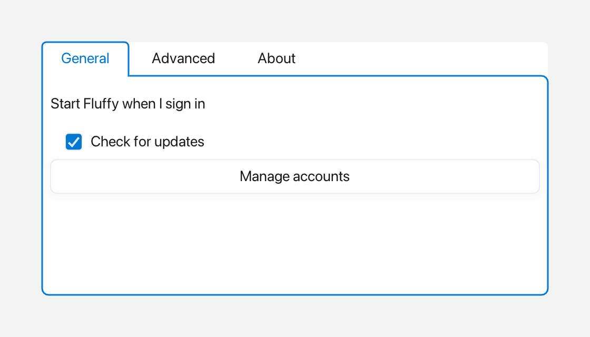

TabView
A TabView shows a row of tabs above a content panel. Only the selected tab's
panel is visible.

Three tabs, with the first one active.
What it's for
Use a TabView when you want to split a window into several pages that the user
switches between, such as "Overview", "Details", and "Settings". Tabs keep each
page one click away without giving every page its own window.
The widget draws the tab buttons along the top and a content area below. The selected tab's text uses the theme's accent color, and hovering another tab gives it a subtle fill. When the tab view has focus, a halo surrounds the panel and the selected tab as one shape.
A first example
A window is the operating-system window your app draws into. Window::open
creates it, and if (!win) stops the program if the window could not be opened.
win.add<T>(...) creates a widget inside that window and returns a
reference to it. Rect{x, y, width, height} places the widget. A callback is a
small function you give to a widget so it can call you back when something
happens.
#include <cstdio>
#include <fluffy/fluffy.hpp>
int main() {
fluffy::Window win = fluffy::Window::open("TabView demo", 640, 400);
if (!win) return 1;
auto& tv = win.add<fluffy::TabView>(fluffy::Rect{40, 40, 400, 200});
tv.addTab("Overview", "overview");
tv.addTab("Details", "details");
tv.addTab("Settings", "settings");
tv.setSelected(1);
tv.setOnSelect([](int idx, const std::string& id) {
std::printf("tab %d:%s\n", idx, id.c_str());
});
win.run();
}
addTab(label, id) adds a tab in order. The first tab is selected
automatically; later addTab calls leave the selection alone. setSelected
changes the visible tab, and the onSelect callback tells you when the
selection changes, giving you the index and the tab's id.
The snippets below assume win and tv from this example.
Common tasks
Putting widgets in a tab
A Container is a widget that holds other widgets. The active tab's content
lives in the Container returned by content(). add on that container
works the same way as add on the window.
auto& content = *tv.content();
auto& label = content.add<fluffy::Label>(fluffy::Rect{8, 8, 200, 24}, "Hello");
content.removeAllChildren();
removeAllChildren clears the active tab's content. The window still owns the
container, so you do not delete it yourself.
Loading from YAML
Fluffy can also describe widgets in YAML, a plain text format:
TabView:
tabs: ["Overview", "Details", "Settings"]
selected: 0
x: 40
y: 40
width: 400
height: 200
TabView reads only tabs and selected from YAML; the geometry keys shown
here are ignored, so set the bounds in code with setBounds.
Good to know
- Tabs are append-only through
addTab. There is notabs()getter and no remove or clear operation. setSelecteddoes nothing for out-of-range indices or for the already-selected index; neither case firesonSelect.addTabwith an emptyiduseslabelas theid.- The first tab (
selected == 0) already shows its highlight at first view.
Quick reference
Properties
| Property | Type | Description |
|---|---|---|
tabs |
— | Ordered headers, append-only via addTab(label, id) (no tabs() getter, no remove/clear). |
selected |
int |
Index of the visible tab (read via selected()). The first addTab selects 0; later addTab calls leave the selection alone. |
content |
Container* |
Container for the active tab's widgets. |
Methods
auto& tv = win.add<fluffy::TabView>(fluffy::Rect{40, 40, 400, 200});
tv.addTab("Overview", "overview");
tv.addTab("Details", "details");
tv.addTab("Settings", "settings");
tv.setSelected(1);
int sel = tv.selected();
tv.setOnSelect([](int idx, const std::string& id) {
std::printf("tab %d:%s\n", idx, id.c_str());
});
auto& content = *tv.content();
auto& label = content.add<fluffy::Label>(fluffy::Rect{8, 8, 200, 24}, "Hello");
content.removeAllChildren();
Events
| Event | Signature | When |
|---|---|---|
onSelect |
void(int index, const string& id) |
Click on a header tab or programmatic setSelected() with a new, in-range index. |
See also
- Container —
tv.content()is aContainer.